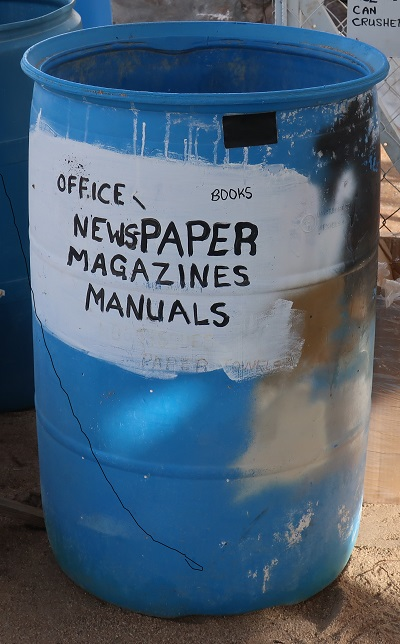

The cage on the trailer is used to contain cardboard, paperboard (like cereal boxes, snack boxes, beer cartons), egg cartons and brown paper.
It cannot be emphasized enough that
recyclables must be clean of all food debris before disposal. Pizza boxes should have food scraped or wiped off the cardboard.
Food contamination and cross-contamination of recyclables will lower the value of a bale of product. We want the market for recyclables to grow, so let's be responsible for our waste.
Please make sure loose or small items are contained, so as not to blow out of the cage.
And please break down all boxes so as to make more room.
TetraPak containers (milk cartons, juice boxes, cartons with a plastic liner) are
NOT recyclable at this time. Please place these items in the trash or take them north.
There is a separate barrel for office paper, newspapers, magazines, manuals, books and tin can labels. Hardback books should have the covers removed (put these in with the cardboard). If you have a lot of books, please box them and place the box near the barrel.
